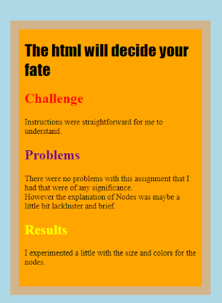
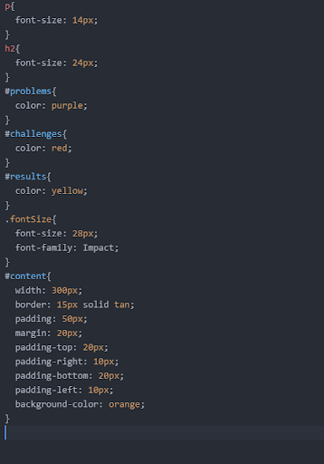

The Lab 9 assignment stylized a bit.
 Didn't have any hitches in my previous labs.
No real problems
Messed around with debugging and experimented to see if there were any previous problems.
I ended up improving one of my labs a little bit.
I decided to keep it simple since I just did lab 15 and I don't really have
too much to add to this one. Tried implementing jQuery only to end up with a bit of a mess.